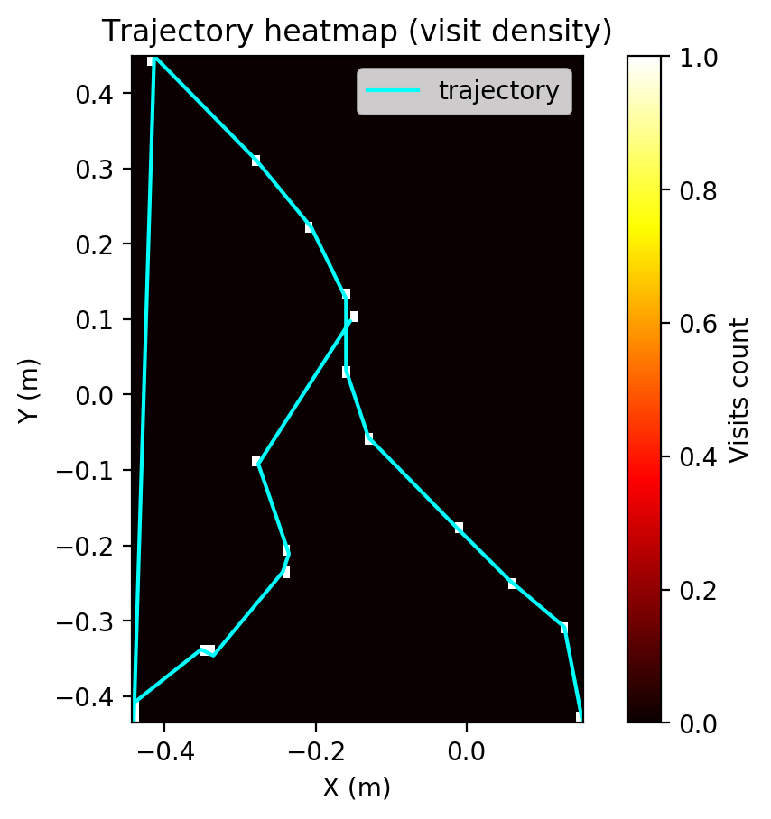
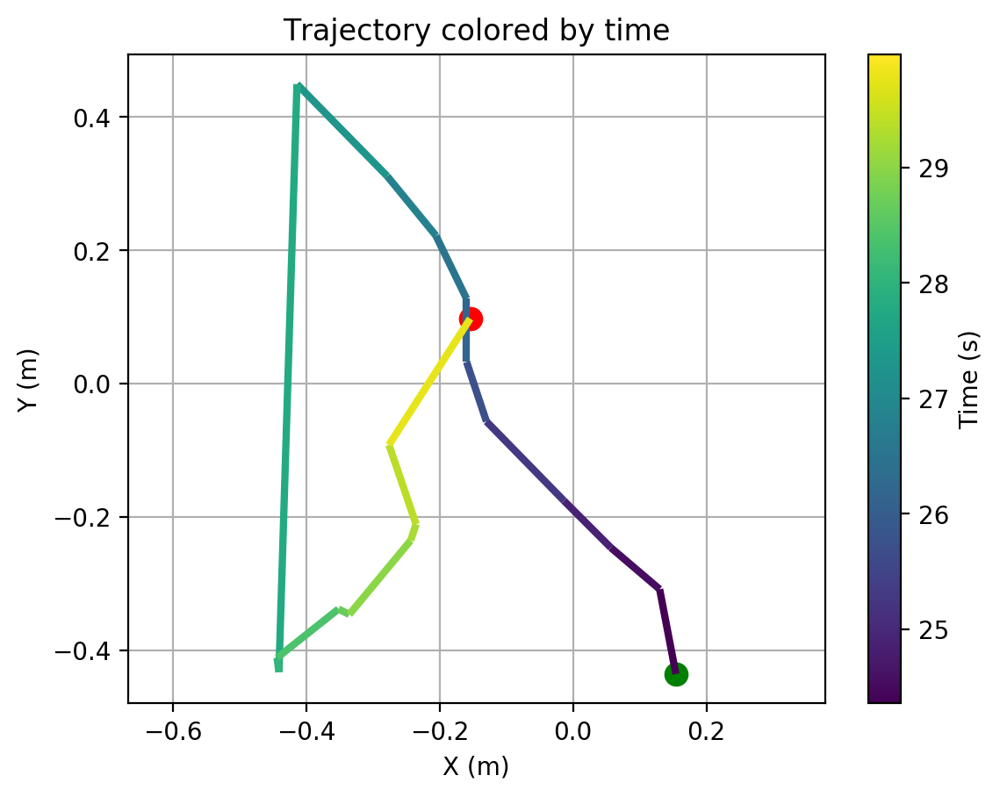
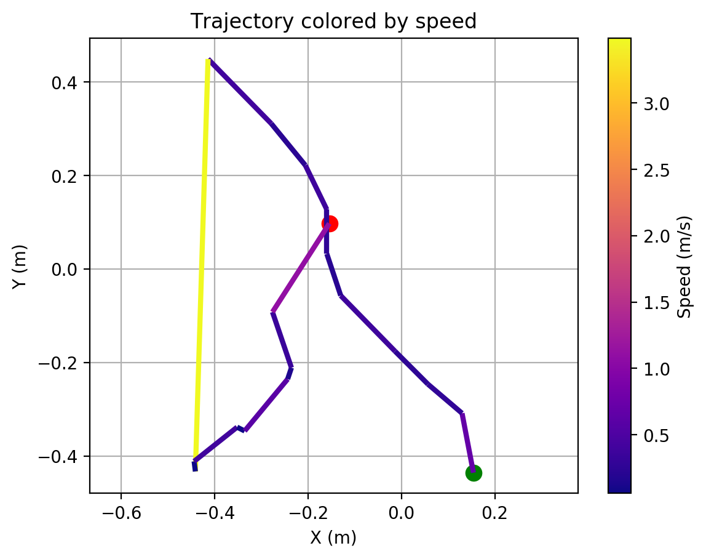
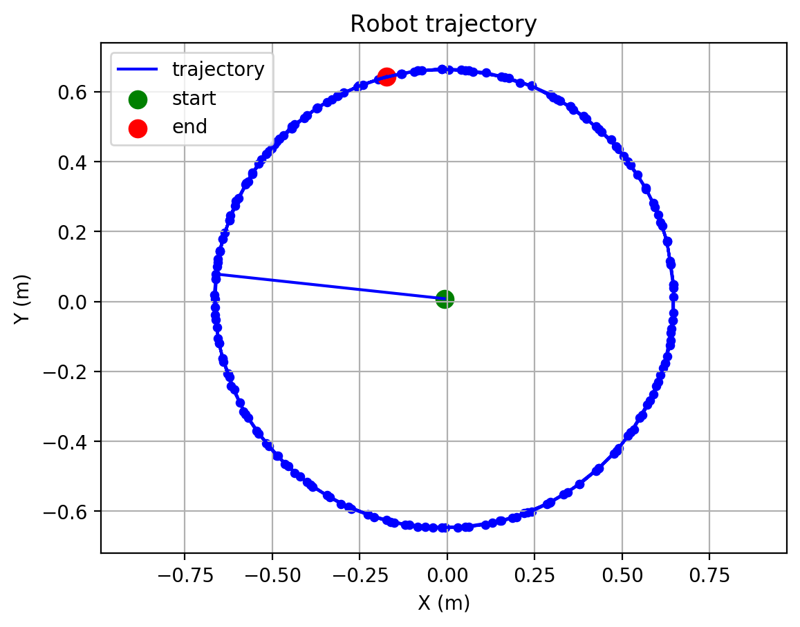

Interactive trajectory (hover)
Source: trajectory_interactive.html
Animated pose (orientation)
Source: trajectory_animated.html
Heatmap (visit density)

Source: trajectory_heatmap.png
Colored by time

Source: trajectory_time_colored.png
Colored by speed

Source: trajectory_speed_colored.png
Base PNG (matplotlib)

Source: trajectory_interactive.png
Anomalies (planned)
Not implemented yet. Planned detectors:
- Stops (speed below threshold for N seconds)
- Teleports (position jump above threshold between frames)
- Marker swap / orientation flip (theta discontinuity)
- Tracking loss intervals (gaps, interpolation usage)